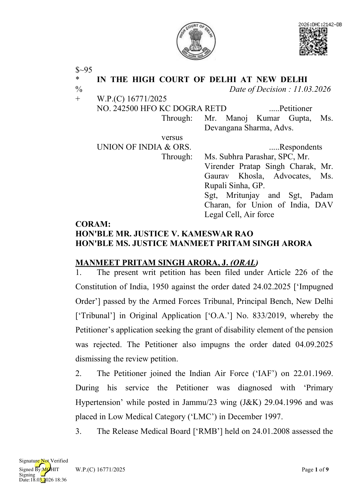
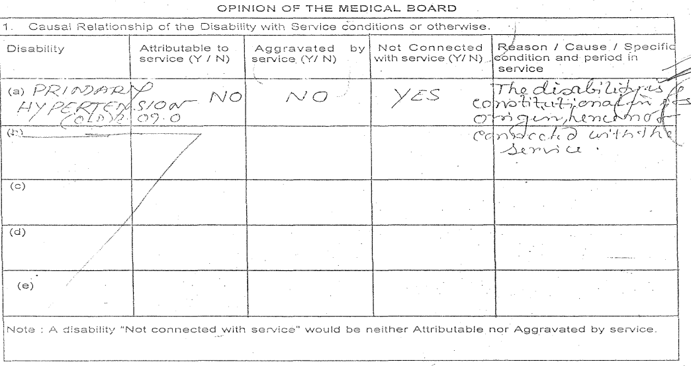

disability i.e., Primary Hypertension at 30% for life. The RMB opined that the disease is constitutional in nature and therefore, the aforesaid disability was neither attributable to nor aggravated [‘NANA’] by the military service. The Petitioner was discharged from IAF in low medical category on 01.01.2009 after completion of 39 years and 346 days of regular service.
- The Petitioner filed appeal(s) for grant of the disability pension, which was rejected leading him to file the O.A. No. 833/2019. The Tribunal, rejected the relief of disability pension vide impugned order dated 24.02.2025. The Tribunal after perusing the RMB opined that the Petitioner was overweight and concluded that this was a causative factor leading to the disability of Primary Hypertension. Aggrieved by the impugned order passed by the Tribunal on 24.02.2025, the Petitioner filed a review petition which was also dismissed vide order dated 04.09.2025.
- In these facts, the Petitioner has filed the present writ petition to seek the grant of disability pension. Submissions by the Petitioner
- Learned counsel for the Petitioner states that the Respondents overlooked the fact that the Petitioner had joined the IAF in 1969 and was medically and physically fit at the time of his enrolment, thereby attracting the presumption of attributability under the Entitlement Rules 2008. (Re: Dropadi Tripathi v. Union of India & Ors1 )
- He states that the Petitioner was diagnosed with Primary Hypertension in April 1996 (i.e., after 27 years of service). He states that the
1 2025:DHC:8709-DB
Petitioner during his tenure was posted in a high stress area which involved long working hours, adverse climate thereby making the disability attributable to or aggravated by the service conditions. He states Petitioner was posted in Jammu and Kashmir as well as other field areas.
- He states that the Petitioner’s disability was incurred during active service, which attracts the presumption under Regulation 423(a) of the Regulations for the Medical Services of the Armed Forces, 2010 and thus the disability shall be presumed to be attributable to or aggravated by military service, unless proved otherwise by cogent evidence.
- He states that, post first onset of Primary Hypertension, due to several restrictions coupled with prescription of lifelong medication Tab Atenolol (5 mg), the Petitioner started gaining weight. He states that Atenolol is a betablocker known to cause weight gain if consumed more than six months.
- He states that the findings of the Tribunal are contrary to the material on record and ignore the applicable guidelines governing weight standards in the Air Force. As per AFI 36-2905 (Air Force Instruction 36-2905), which regulates physical fitness assessments including body composition assessment (BCA), the determination of fitness is primarily based on compliance with prescribed body fat percentage limits rather than mere body weight. Significantly, there is no finding in the RMB that the Applicant was suffering from obesity. Rather, the permissible 10%-20% overweight tolerance falls within the acceptable limits under the applicable standards.
- He states that the Tribunal’s finding that being “overweight” is the cause of the disability, is unsubstantiated from the RMB, and was not part of the grounds for rejection pleaded by the Respondents. This was a new ground recorded by the Tribunal on its own observations and thus could not have been a valid ground for rejecting the claim. He states that therefore the Petitioner had no opportunity to explain its stand.
- He states that the Petitioner was always within the permissible weight limits and was never issued with the advisory for reduction of his weight, making the reason of overweight allegation and afterthought.
- In reply, learned counsel for the Respondents relies upon the stand taken in the counter affidavit filed before the Tribunal as well as the reasons set out in the impugned order. She states that in the Annual Medical Examination held in December 1997, the Petitioner was diagnosed with Primary Hypertension and Diabetes. She states that the Petitioner was advised to gradually reduce weight. She states that these pleas were specifically raised in the counter affidavit and therefore grounds raised in the writ petition alleging that the Petitioner has been taken by surprise on the findings of “overweight” returned in the impugned order is incorrect and contrary to the record.
- She states that the Petitioner had initially raised a claim for disability pension, which was rejected vide order dated 20.03.2008. The Petitioner thereafter filed an appeal belatedly on 24.10.2018 which was not processed as it was time barred and this fact was intimated vide communication dated 13.03.2019. The Petitioner filed a further appeal on 25.04.2019, which was not maintainable in view of the rejection letter dated 13.03.2019 and this was communicated vide letter dated 06.06.2019. It is stated that therefore the claim of the Petitioner is time barred. Case Analysis
- This Court has heard the learned senior counsel for the parties and perused the record.
- As noted above, the Petitioner joined the IAF on 22.01.1969, and superannuated on 01.01.2009 in LMC after rendering a service for more than 39 years. The Petitioner was diagnosed with Primary Hypertension during routine annual medical examination in December 1997 while serving at AF Stn. Amla.
- In his personal statement at PART I of the RMB, the Petitioner had explicitly stated that he did not suffer from any disability or disease before joining the service. This statement has not been disputed in the RMB, nor has it been contested before the Tribunal or this Court. The RMB, in its opinion, has given the following reasoning for declaring the disability NANA by military service:

The RMB has opined that the disability is constitutional in its origin, hence not connected with the service. No other causative factor has been identified by the RMB in its opinion. Whereas the Tribunal, while rejecting the relief of the disability pension formed an opinion that the Petitioner has developed the said disability due to the lifestyle related factors, i.e., weight gain and thus, concurred that the disability is NANA. It is noted that the reason recorded by the AFT, i.e., lifestyle related factors, weight gain, etc are not identified/recorded in the RMB as the cause for concluding the disability as NANA. In fact, the subject RMB categorically records that the disability is not attributable to the officer’s own negligence or misconduct recorded at internal page of the RMB2. In this factual background, we will examine whether the reasons recorded in the impugned order are sustainable.
- The Supreme Court in its recent judgment in the case of Bijender Singh vs. Union of India3 has reiterated that it is incumbent upon the Medical Board to furnish reasons for opining that a disease is NANA and the burden to prove the same is on the Military Establishment. The nature of reasons to be recorded by the Medical Board have been succinctly explained by the Supreme Court in another recent decision of Rajumon T.M. v. Union of India4. In the said decision, Supreme Court stated that an opinion of the Medical Board stating ‘CONSTITUTIONAL PERSONALITY DISORDER’ without giving reasons or causative factors to support such an opinion, is an unreasoned medical opinion. The Supreme Court explained that in the absence of enlisted causative factors the aforesaid opinion of the Medical Board was merely a conclusion and would not qualify as a reasoned opinion for holding the disease to be NANA.
- It is now well settled that under the Entitlement Rules 2008 for opining NANA, the Medical Board is obligated to record cogent reasons i.e., the causative factors which in their opinion led to the personnel suffering
2 Page no. 56 of the paper-book 3 2025 SCC OnLine SC 895 [Paragraph Nos. 45.1, 46 and 47] 4 2025 SCC OnLine SC 1064 [Paragraphs 25, 26, 32 and 36]
from the said disability or disease. If the Medical Board fails to identify the causal connection, the presumption is that the disability or disease was suffered by the personnel due to the stress and strain arising from the military service.
- The statement of the Medical Board in the subject RMB that ‘the disability is constitutional in origin’ without enlisting the causative factors is not a legally valid ground for opining NANA.
- The Tribunal vide its impugned order has independently concluded that the disability suffered was attributable to the Petitioner’s own lifestyle, considering that the Petitioner failed to maintain ideal body weight. The impugned order refers to the Petitioner’s weight gain while concluding that the Petitioner was negligent and, on that basis, has rejected the claim for the grant of the disability element of pension. However, in the present case, the RMB has not recorded the Petitioner’s overweight or lifestyle as a reason for the onset of the disability. A Coordinate Bench of this Court in Dropadi Tripathi v. Union of India and Ors.5 has opined that Tribunal cannot identify causative factors to draw a causal connection with the disease, if these factors have not been enlisted in the opinion of the RMB or the specialist.
- We are, therefore, of the considered opinion, in the absence of any such reason (i.e., overweight) recorded in the RMB, the Tribunal could not have independently drawn a causal connection between the Petitioner’s disability and his weight. The Tribunal, in doing so, has travelled beyond the medical opinion on record and attributed a cause that was never opined by
5 2025: DHC: 8709-DB [Paragraph Nos. 13 and 14]
the RMB.
- At this juncture, it is also appropriate to refer to the decision of the Coordinate Bench in the case of Union of India & Ors. v. Ex JWO Dharmendra Prasad6, wherein the issue pertaining to the effect of the personnel’s overweight condition came up for consideration, and it was held by the Court that mere obesity, by itself, does not ipso facto render other disability, such as Primary Hypertension, Diabetes Mellitus, and CAD, suffered by Force personnel, as attributable to obesity.
- Therefore, the reasoning of the Tribunal in the Impugned Order for denying the grant of disability pension in respect of the other disability, solely on the ground that the Petitioner was overweight, cannot be sustained in view of the judgment in Ex JWO Dharmendra Prasad (supra), as this is not the causative factor recorded in the RMB.
- Thus, the opinion of the Tribunal holding that the Petitioner suffered from the disability due to overweight cannot be taken into consideration. The reason recorded in the RMB that the disability is constitutional in its origin can also not form a reasonable ground for holding NANA as the RMB fails to record the causative factors for opining that the disability is constitutional. No other ground has been cited in the RMB report of the Respondent for holding NANA. Therefore, in the absence of any other identified causal connection for the said disability in the RMB, the rejection of the claim for disability pension by the Military establishment cannot be sustained and the Petitioner is entitled to disability pension.
- We therefore find merit in this writ petition. The OA 833/2019 filed
6 2025 SCC OnLine Del 2549
by the Petitioner is entitled to succeed. The impugned order dated 24.02.2025 is accordingly quashed and set aside. Also, the impugned order dated 04.09.2025 passed in the review petition is quashed and set aside.
- The RMB has determined the assessment of the disability at 30% for life. The Respondents are directed to grant benefit of disability pension at 30% for life rounded off to 50% for life in view of the judgment of the Supreme Court in Union of India v. Ram Avtar7. The Petitioner will be entitled to benefit of rounding off with effect from 10.12.2014 i.e., the date of the judgment in Ram Avtar (supra). The Petitioner was discharge in 2009, however he has approached the Tribunal in 2019, therefore keeping in view the law laid down by Supreme Court in Union of India & Ors v. Tarsem Singh8 , the arrears will be restricted to three years prior the OA, i.e., 04.09.2025 payable to the applicant within four months of the receipt of a copy of this order failing which it shall earn interest at 9% p.a. till the actual date of payment.
- The petition is allowed, with no orders as to costs.
MANMEET PRITAM SINGH ARORA, J
V. KAMESWAR RAO, J MARCH 11, 2026/AJ
7 2014 SCC OnLine SC 1761 8 (2008) 8 SCC 648